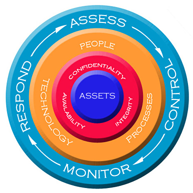

Managing Information Security in Organizations :
Chapter 1
INFORMATION SECURITY AND RISK MANAGEMENT
Information security, also called as InfoSec, is the practice of defending information from unauthorized access, use, disclosure, disruption, modification, perusal, inspection, recording or destruction. It is a general term that can be used regardless of the form the data may take (e.g. electronic, physical).
Risk management is the identification, assessment, and prioritization of risks (defined in ISO 31000 as the effect of uncertainty on objectives) followed by coordinated and economical application of resources to minimize, monitor, and control the probability and/or impact of unfortunate events or to maximize the realization of opportunities. Risk Managements objective is to assure uncertainty does not deviate the endeavor from an organizations security program should support its mission, objectives, and goals.

- Below are a few important points :
- The core principles of information security are confidentiality, integrity, and availability.
- Privacy is related to the protection and proper handling of personal information.
- Security governance is the set of responsibilities and practices related to the development of strategic direction and risk management.
- Security policies specify the required characteristics of information systems and the required conduct of employees.
- Security roles and responsibilities define the ownership, access, and use of assets, and the general responsibilities of managers and employees.
- Data classification and protection defines levels of sensitivity for business information, as well as handling procedures for each level of sensitivity.
- Internal audit is the activity of evaluating security controls and policies to measure their effectiveness.
- An organizations hiring process should include the use of non-disclosure, employment, non-compete, intellectual property, and acceptable use agreements, as well as background checks.
- Upon termination of employment, the organization should retrieve all assets issued to the terminated employee and immediately rescind the employees access to all information systems.
- Sound work practices include separation of duties, job rotation, and mandatory vacations.
- A security education, training, and awareness program should keep employees regularly informed of their expectations.
- Security professionals should adhere to a strict code of professional conduct and ethics.